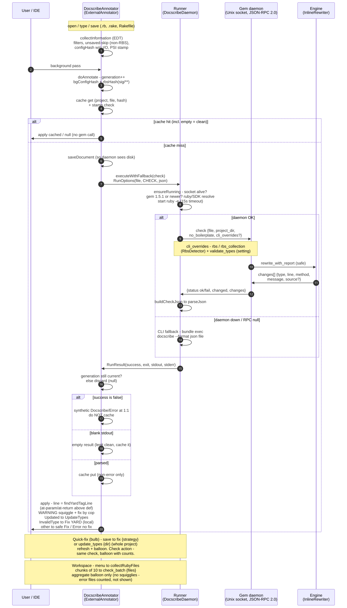

YARD docs from Ruby AST
Auto-generate inline YARD documentation for Ruby by analyzing code AST. Supports RBS and Sorbet type signatures.
gem install docscribeOne daemon per project serves both IDE plugins over a Unix socket. Falls back to CLI.
Ecosystem: gem and editors
Three ways in. Gem for CI, extensions for the editor. Same engine underneath.
YARD docs from AST. Safe fix with -a, full rebuild with -A. Needs Ruby >= 2.7.
gem install docscribeMissing docs underlined on open and save. One-click fix, RBS types, whole-project check, Cmd+Shift+D chords.
ext install unurgunite.docscribe-vscodeTalks to the daemon over a Unix socket: annotations plus quick-fixes. CLI when the daemon is off.
Settings - Plugins - DocScribeFeature set
Six behaviors that keep docs next to code.
CLI quickstart
Three commands, in order. Paste and run.
docscribe libdocscribe -a libdocscribe update_types libType this command, prompt and command share one lineExit status of the last run, table below maps each code| $? | Meaning | Next action |
|---|---|---|
| 0 | OK, docs complete | Commit the diff |
| 1 | Check found missing docs | Run with -a flag |
| 2 | Had errors | Read output, fix input |
Designed, not grown
CLI parses with the parser gem (Prism on Ruby 3.4+), collects methods, then infers types through RBS, Sorbet, and plugin signatures before rewriting the file, safe or aggressive. A daemon keeps parsed files behind a Unix-socket JSON-RPC with a 1000-entry LRU cache, so editor checks return instantly.

One watcher parses, thin IDE clients ask over socket.

AST in, typed YARD out, safe or aggressive.

RBS plus Sorbet plus custom providers.
diagram paper stays light in dark mode
Daemon for IDEs
Five JSON-RPC methods. Pick one to see its payload.
| Method | Use |
|---|---|
| check | Single file check |
| fix | Apply missing tags |
| check_batch | Workspace run |
| update_types | File-scoped type sync, needs 1.6.2 |
| ping | Health probe |
docscribe-client --check lib/user.rbRubyMine 2026.1 plus uses annotator plus intention over this socket. Falls back to CLI when daemon is off.
Compatibility strip
Old gems lack new daemon calls. Match the client to the gem first.
File-scoped type sync
Per-file update_types flag lands here.
you get: per-file sync, you miss: nothing current
Batch check
check_batch runs whole workspace at once.
you get: batch runs, you miss: file-scoped sync
CLI plus daemon start
Daemon ships, use docscribe lib for plain runs.
you get: daemon checks, you miss: batch plus sync
Internal API docs. Class and method reference for the gem, separate from this page.
unurgunite.github.io/docscribe_docs